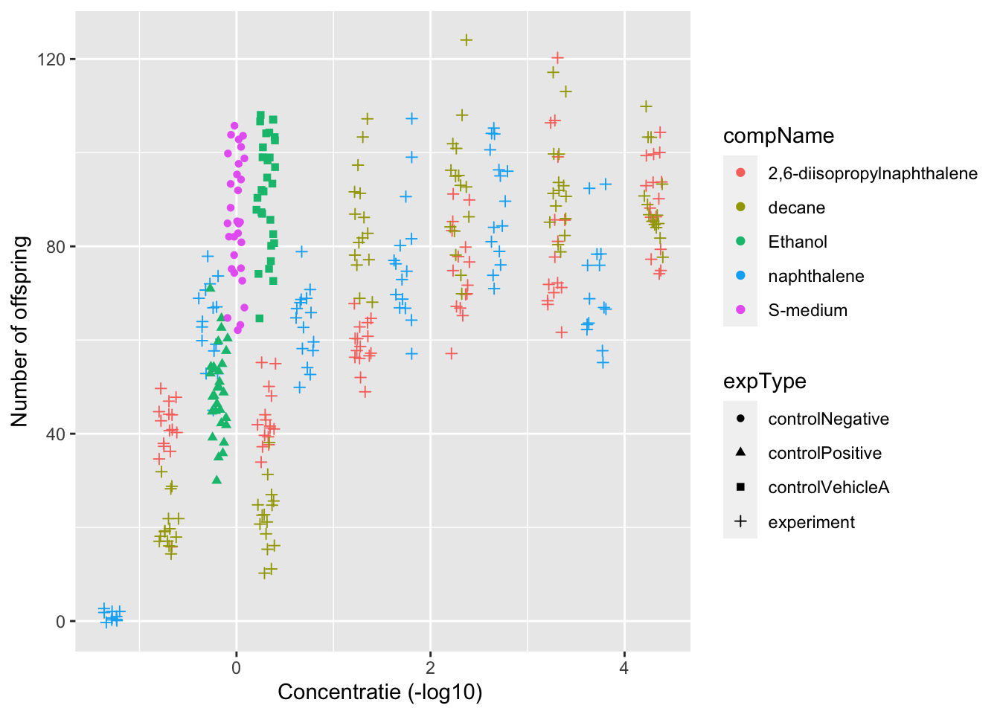
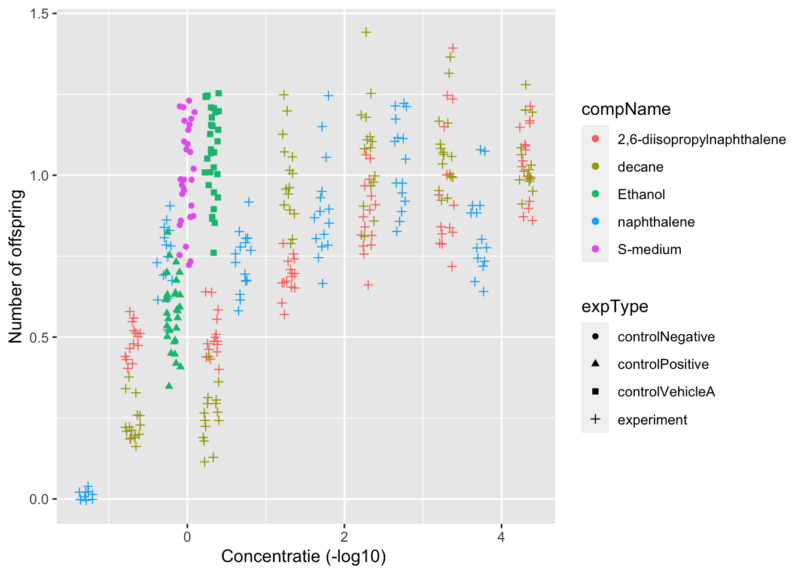

2 Verwerken van data
Het interperteren en verwerken van data van iemand anders is belangrijk in de data science. Er wordt hier data gebruikt van een onderzoek waar C. elegans nematodes blootgesteld aan verschillende soorten stoffen.
Belangrijkste in een data analyse is bergrijpen waar je data over gaat. Door de metadata te lezen krijg je een goed idee van waar je dataset overgaat en wat elke kopje betekent. Voor dit onderzoek willen we het effect weten van verschillende stoffen op de nematode maar ook de het effect van verschillende concentraties. Om dit te onderzoeken worden de kolommen RawData, compConcentration en expType gebruikt. In RawData staan het aantal nematodes op de plaat, in de compConcentration de concentratie van de stof en de expType de soort stof.
Om globaal een idee te krijgen van het effect worden deze variabel tegen elkaar uitget in de grafiek hieronder.
library(DT)
library(kableExtra)
library(readxl)
library(tidyverse)
tabel <- read_excel(here::here("data/CE.LIQ.FLOW.062_Tidydata.xlsx"))
tabel$compConcentration <- as.double(tabel$compConcentration)
tabel$compName <- as.factor(tabel$compName)
#x-as concentreatie in -10log
tabel$compConcentration <- ifelse(tabel$compConcentration==0,0,-log10(tabel$compConcentration))
tabel %>% ggplot(aes(x=compConcentration,y=RawData,color=compName,shape=expType))+
geom_jitter(width=0.1)+
labs(x="Concentratie (-log10) ",
y="Number of offspring")
In het experiment is de positieve controle van dit experiment is ethanol . De negatieve controle van dit experiment is de S-medium
Bij het verwerken van data is het belangrijk dat de data goed ingelezen wordt. Eén ding waar we tegen lopen bij deze dataset is dat de compConcentration ingelezen wordt als character type i.p.v. een getal. Hierdoor klopt de de x-as niet met wat je wilt zien, omdat er groepen en geen schaal weergegeven wordt. Dit wordt opgelost door het typ evan compConcentration te veranderen van een character naar een double.
De bovenstaande grafiek geeft een globaal overzicht, maar er kunnen geen conclusies uitgetrokken worden. Hiervoor is een verdere data analyse nodig. Zo’n data analyse kan er als volgt uitzien:
- Data plotten zodat er een globaal overzicht hebt
#Genormalizeerd en gemiddelde naar 1
neg_controle <- tabel %>% filter(expType=="controlNegative")
tabel$RawData[tabel$expType == 'controlNegative'] <- neg_controle$RawData / mean(neg_controle$RawData)
tabel %>% ggplot(aes(x=compConcentration,y=RawData,color=compName,shape=expType))+
geom_jitter(width=0.1)+
labs(x="Concentratie (-log10) ",
y="Number of offspring")